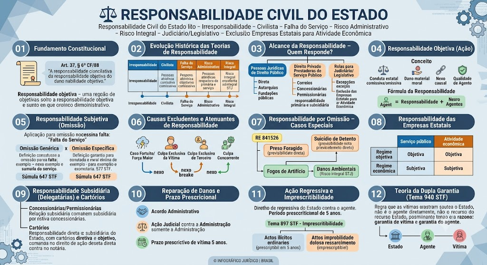

Art. 37, § 6º da CF/88
Art. 37, § 6º da CF/88
\"As pessoas jurídicas de direito público e as de direito privado prestadoras de serviços públicos responderão pelos danos que seus agentes, nessa qualidade, causarem a terceiros, assegurado o direito de regresso contra o responsável nos casos de dolo ou culpa.\"
Este é o dispositivo central que consagra a responsabilidade objetiva do Estado no Brasil, com base na teoria do risco administrativo.
Interpretação: O Estado responde independentemente de culpa do agente, bastando a comprovação do nexo causal entre a conduta estatal e o dano. O agente só responde na ação regressiva, se houver dolo ou culpa.
Pessoas Jurídicas de Direito Público
Pessoas Jurídicas de Direito Público
Administração Direta (União, Estados, DF, Municípios), Autarquias e Fundações Públicas de direito público. Respondem objetivamente com base no art. 37, §6º.
Pessoas Jurídicas de Direito Privado Prestadoras de Serviço Público
Pessoas Jurídicas de Direito Privado Prestadoras de Serviço Público
Empresas Públicas e Sociedades de Economia Mista que prestam serviço público (ex.: Correios, EBC). Respondem objetivamente.
Delegatárias: Concessionárias, Permissionárias e Autorizadas – responsabilidade primária da empresa e subsidiária do Estado (após exaurimento do patrimônio da delegatária).
NÃO inclui: Empresas Estatais que exploram atividade econômica
NÃO inclui: Empresas Estatais que exploram atividade econômica
Empresas Públicas e SEM que exploram atividade econômica (ex.: Petrobras no mercado, Banco do Brasil) – seguem regime de direito civil: responsabilidade subjetiva (art. 927 CC), baseada em culpa do agente.
Exceção: Se a atividade econômica for exercida em regime de serviço público (ex: Correios, que tem monopólio), aplica-se a responsabilidade objetiva.
Poder Judiciário e Legislativo – Regras Especiais
Poder Judiciário e Legislativo – Regras Especiais
Atos do Poder Judiciário (Jurisdicionais):
• Regra: Estado NÃO responde por decisões judiciais (soberania dos julgados), salvo exceções.
• Exceções (responde objetivamente): erro judiciário penal (Art. 5º, LXXV CF); prisão além do tempo fixado; dolo/fraude do magistrado (Art. 143 CPC); demora irrazoável (STJ).
Atos do Poder Legislativo (Leis):
• Regra: Estado NÃO responde por leis gerais e abstratas, pois são atos normativos.
• Exceções: leis declaradas inconstitucionais no controle concreto (caso a caso); leis de efeitos concretos (ex: ato administrativo disfarçado de lei); leis que causem dano a um grupo determinado e específico, com quebra da isonomia.
Controle de Constitucionalidade: A declaração de inconstitucionalidade não gera, por si só, direito a indenização, salvo se a lei tiver efeitos concretos e causar dano direto e imediato a um indivíduo ou grupo determinado.
Conceito
Independe da comprovação de dolo ou culpa do agente público. Basta comprovar:
1. Conduta estatal (comissiva – ação ou omissão quando há dever legal).
2. Dano (material ou moral).
3. Nexo causal direto entre a conduta e o dano.
Técnica de socialização de danos – teoria do risco administrativo. Abrange danos a usuários e terceiros não usuários.
Agente: pode ser servidor, estagiário, voluntário – qualquer um que atue 'nessa qualidade'.
Fórmula da Responsabilidade
Fórmula da Responsabilidade
Conduta Estatal (Oficial) + Dano (Certo e Causal) + Nexo Causal = Dever de Indenizar (Objetivo)
Aplicação em caso de omissão
Aplicação em caso de omissão
Em regra, a omissão do Estado exige a comprovação de culpa – negligência, imprudência, imperícia – ou falta do serviço (culpa anônima).
Formas de falta do serviço: inexistência do serviço, mau funcionamento ou atraso na prestação.
Súmula 647 STF: \"A responsabilidade do Estado por atos de seus agentes é objetiva, inclusive nos casos de omissão, quando o dever de agir decorra de obrigação legal.\" – exceção: dever de custódia (presos, alunos, internados).
Omissão Genérica × Omissão Específica
Omissão Genérica × Omissão Específica
Omissão Genérica (Subjetiva – Faute du Service):
• Descumprimento de dever geral de fiscalização/segurança.
• Exige prova do elemento culpa – vítima deve provar que o serviço não funcionou, funcionou mal ou atrasou.
• Exemplo: assalto na via pública por falta de policiamento geral.
Omissão Específica (Objetiva – Dever de Custódia/Garante):
• Dever legal e específico de proteger bem ou pessoa sob custódia direta.
• Não exige prova de culpa – o simples descumprimento do dever de vigilância já gera responsabilidade.
• Exemplo: fuga de preso, morte de detento, aluno ferido em escola pública, paciente em hospital público.
Caso Fortuito e Força Maior
Caso Fortuito e Força Maior
Evento imprevisível e inevitável, alheio à Administração. Rompem o nexo causal. Se a omissão estatal agravou o dano, responde parcialmente.
Exemplo: Uma árvore cai sobre um carro em uma via pública – se a árvore estava doente e a prefeitura foi notificada, responde; se a queda foi por um vendaval atípico (força maior), não responde.
Culpa Exclusiva da Vítima
Culpa Exclusiva da Vítima
O dano foi causado unicamente pela própria vítima – exclui a responsabilidade do Estado.
Exemplo: Pedestre atravessa a rua fora da faixa e é atropelado por viatura policial em velocidade normal – se o atropelamento foi inevitável, a culpa é exclusiva da vítima.
Culpa Exclusiva de Terceiro
Culpa Exclusiva de Terceiro
O dano é causado unicamente por terceiro, sem participação estatal – exclui a responsabilidade.
Exemplo: Um assalto em repartição pública por bandido armado – se o Estado não tinha dever específico de vigilância armada, não responde (omissão genérica).
Culpa Concorrente
Culpa Concorrente
Não exclui, mas atenua a responsabilidade – reduz o valor da indenização proporcionalmente à participação de cada um.
Exemplo: Vítima contribui para o acidente (ex: motorista em alta velocidade colide com buraco na via) – a indenização é reduzida.
RE 841526 (Tema 362 – STF)
RE 841526 (Tema 362 – STF)
Morte de detento gera responsabilidade objetiva do Estado por omissão, quando descumprido o dever de proteção (art. 5º, XLIX CF). O Estado tem o dever de custódia e proteção dos presos.
Atenção: O STF exige a comprovação de que o Estado tinha conhecimento do risco e não agiu, mas a responsabilidade é objetiva – basta a omissão no dever de custódia.
Suicídio de Detento (STF – Tema 362)
Suicídio de Detento (STF – Tema 362)
A responsabilidade objetiva por omissão só subsiste se o Estado tinha conhecimento prévio da situação de risco (ex: detento com transtorno mental grave, alerta de ameaças) e não adotou medidas de prevenção. Se o suicídio for imprevisível, a responsabilidade pode ser afastada por quebra do nexo causal.
Preso Foragido
Preso Foragido
Não há responsabilidade objetiva automática – exige nexo causal entre a fuga e o dano posterior. O Estado só responde se a fuga decorreu de omissão culposa e o dano for consequência direta dessa omissão.
Exemplo: Preso foge e mata alguém – o Estado responde se a fuga foi facilitada por falha na vigilância (porta destrancada, falta de guarda). Se a fuga foi por um motim imprevisível, a responsabilidade pode ser afastada.
Fogos de Artifício
Fogos de Artifício
Dano por comércio irregular de fogos → responsabilidade se houver violação do dever específico de fiscalização do Poder Público. Sem fiscalização, responde.
Danos Ambientais – Risco Integral (STJ)
Danos Ambientais – Risco Integral (STJ)
STJ aplica a teoria do risco integral – Estado responde mesmo sem excludentes (REsp 1.071.741/SP). Em danos ambientais, a responsabilidade é objetiva e não admite excludentes (caso fortuito, força maior, culpa de terceiro).
Exemplo: Vazamento de óleo em rio – o Estado responde mesmo que o dano tenha sido causado por terceiro, se tinha dever de fiscalizar.
Atos de Multidão e Terrorismo
Atos de Multidão e Terrorismo
Atos de multidão (distúrbios civis): O Estado responde se houver omissão específica no dever de garantir a ordem pública (ex: não conter uma multidão que depreda patrimônio).
Atos terroristas (lei 13.260/2016): Em regra, o Estado não responde por atos terroristas, pois são imprevisíveis e alheios à sua vontade. Mas se o Estado tinha dever de proteção específico (ex: segurança de aeroportos) e falhou, pode responder.
Atenção – Correios
Atenção – Correios
Os Correios (ECT) são empresa pública prestadora de serviço público (monopólio postal) – respondem objetivamente por danos causados por seus agentes. Isso inclui extravio de correspondência com valor declarado, danos a encomendas, etc.
Concessionárias e Permissionárias
Concessionárias e Permissionárias
O Estado responde subsidiariamente por danos causados por concessionárias e permissionárias. Só responde após o exaurimento do patrimônio da empresa delegatária (falência/insolvência).
Razão: as delegatárias prestam serviço em seu nome, por sua conta e risco.
Exemplo: Um usuário sofre dano em acidente em rodovia concedida. Primeiro aciona a concessionária; se ela não tiver bens suficientes, aciona o Estado subsidiariamente.
Cartórios – Tema 779 STF
Cartórios – Tema 779 STF
O Estado responde direta e objetivamente pelos danos que tabeliães e oficiais de registro (cartórios) causarem a terceiros no exercício de suas funções.
O Estado tem direito de regresso contra o notário/registrador, exigindo-se a comprovação de dolo ou culpa (responsabilidade subjetiva na ação regressiva).
Fundamento: os serviços notariais e registrais são delegados pelo Poder Público e integram a estrutura do Estado.
Exemplo: Um tabelião registra uma escritura fraudada – o Estado indeniza a vítima e depois regride contra o tabelião se ele agiu com dolo/culpa.
Acordo Administrativo
Acordo Administrativo
Reconhecido o dano, a indenização pode ser feita administrativamente, sem necessidade de ação judicial.
Base legal: Art. 37, §6º CF e Lei 9.784/99 – a Administração pode reconhecer o direito e pagar a indenização diretamente.
Ação Judicial
Ação Judicial
Deve ser proposta contra a Administração (STF – Tema 940): vedada ação direta contra o agente. O particular lesado deve acionar apenas o Estado, que depois poderá regredir contra o servidor.
Prazo prescricional da vítima
Prazo prescricional da vítima
5 anos contados do fato danoso – base: Decreto 20.910/32, art. 1º, e Lei 9.494/97, art. 1º, §6º.
Atenção: O prazo é para ações contra a Fazenda Pública, incluindo Estados, DF e Municípios.
Direito de Regresso
Direito de Regresso
O Estado tem direito de regresso contra o agente quando houve dolo ou culpa – art. 37, §6º, parte final CF.
Condição: responsabilidade subjetiva do agente – o Estado responde objetivamente perante a vítima, depois busca o agente para reaver o valor.
Prazo prescricional da ação regressiva: 5 anos (Decreto 20.910/32 – maioria jurisprudencial).
Tema 897 STF – Imprescritibilidade
Tema 897 STF – Imprescritibilidade
Distinção essencial:
• Danos de ilícito civil comum (culpa/negligência) → ação regressiva prescreve em 5 anos.
• Danos decorrentes de ato de improbidade administrativa dolosa → ação de ressarcimento ao erário é IMPRESCRITÍVEL (Art. 37, §5º CF e Tema 897 STF).
Exemplo: Se um servidor desvia dinheiro público, o Estado pode acioná-lo a qualquer tempo para reaver o valor, sem prazo prescricional.
Tema 940 STF
Tema 940 STF
O particular lesado não pode acionar o servidor diretamente; a ação deve ser apenas contra o Estado, que depois poderá regredir.
Fundamento: dupla garantia – para a vítima (ação direta contra o Estado) e para o agente (só responde na ação regressiva, após comprovada sua culpa).
Exceção: se o agente agiu com dolo (ato doloso), a vítima pode acioná-lo diretamente (responsabilidade civil extracontratual com base no art. 186 CC), pois o ato doloso não se confunde com o exercício regular da função.
Exemplo Prático
Exemplo Prático
Um motorista de ônibus municipal, por negligência, atropela um pedestre. O Estado (município) indeniza a vítima. Depois, o município pode regredir contra o motorista se provar que ele agiu com culpa (imprudência). O motorista só pagará se ficar comprovada sua culpa.
Se o motorista atropelou de propósito (dolo), a vítima pode acionar diretamente o motorista na Justiça, além de acionar o Estado.
Mapa-mental
Material de estudo: Responsabilidade Civil do Estado
Material complementar · Ver fonte no GitHub
Evolução Histórica das Teorias de Responsabilidade
Evolução das Teorias
| Teoria | Regra Geral | Observação |
|---|---|---|
| Irresponsabilidade | Estado não responde | Monarquia absolutista (superada) |
| Civilista | Responde como particular (culpa do agente) | CC/1916, art. 15 – responsabilidade subjetiva |
| Falha do Serviço | Responde se o serviço falhou (culpa anônima) | França – séc. XX; subjetiva |
| Risco Administrativo | Responde por atos lícitos e ilícitos (com excludentes) | Adotada no Brasil – art. 37, §6º CF |
| Risco Integral | Responde sempre, sem excludentes | Exceções: danos nucleares, ambientais e terrorismo em aeronaves |
Responsabilidade das Empresas Estatais
Regime de Responsabilidade
| Empresa | Atividade | Regime |
|---|---|---|
| Correios, EBC | Serviço público | Objetiva (art. 37, §6º CF) |
| Petrobras, Banco do Brasil | Atividade econômica | Subjetiva (art. 927 CC – risco empresarial) |
Teoria da Dupla Garantia (Tema 940 STF)
Mapa-mental
